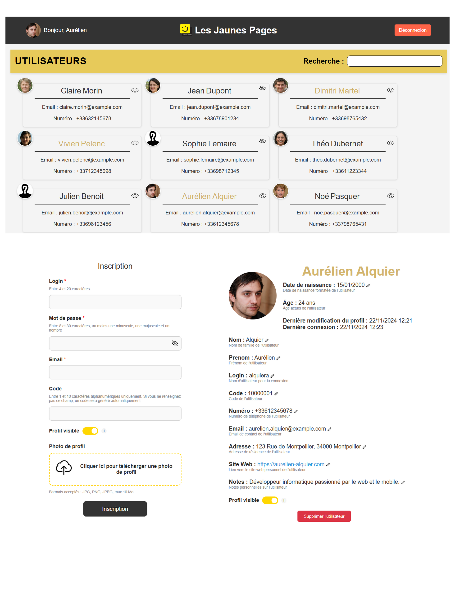

Les Jaunes Pages - Online directory (Bachelor Year 3 project)
- Key skills used: Symfony, Twig, JavaScript, MySQL, Docker, Gestion event handling (ORM), API JSON, Agile methodology (Scrum).
- Link : Live website
Development of a Symfony-based web directory to manage users and profiles, with several administration features.
Main features:
- Registration with a generated or custom unique code, with real-time JavaScript validation.
- Profile visibility (public/hidden), with listed and unlisted profile management.
- Profile editing through pre-filled forms, with login and edit date tracking.
- Profile administration: delete users (except admins), and access hidden profiles.
- Maintenance mode enabled through a YAML configuration file.
- User API to retrieve data in JSON format.
This project was completed in a team of four using Scrum methodology during my third year in the Computer Science bachelor's program.
Some technical details:
- MySQL database with Doctrine migrations and fixtures for mock data.
- Symfony commands to create users or manage roles directly from the terminal.
- Clear error notifications for users in case of code conflicts or registration issues.
This project strengthened my Symfony skills and let me explore advanced topics such as events, CLI commands, and REST API management.
